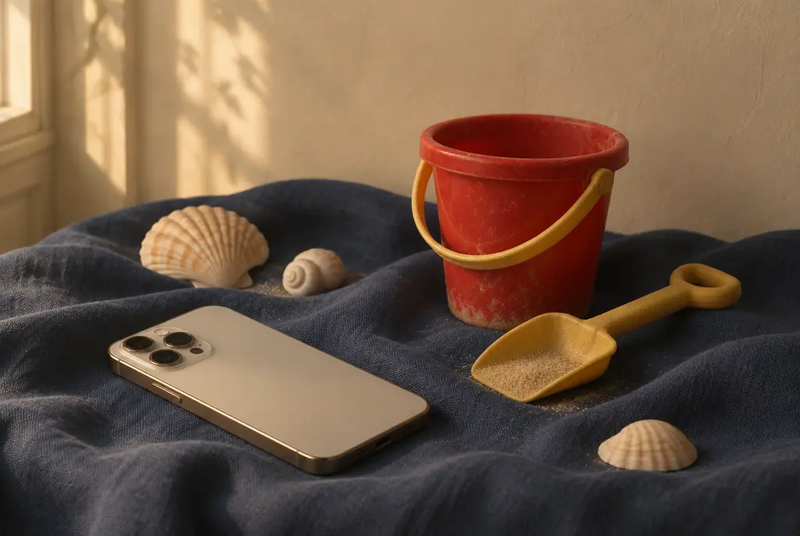

C'è stato un periodo in cui ero sempre acceso. Il telefono sempre in mano, la posta controllata a tutte le ore. Pensavo che essere raggiungibile mi rendesse più bravo nel mio lavoro. In realtà stavo solo consumando me stesso e la qualità della mia attenzione.
Il punto di svolta è arrivato durante una vacanza in famiglia. Avevo promesso ai miei figli che sarei stato completamente presente. Poi mi ritrovavo a controllare il telefono, a rispondere a messaggi «urgenti», a restare con la testa al lavoro.
Fu mio figlio, cinque anni, a darmi la sveglia.
«Papà, sei qui con noi, però non mi ascolti.»
Quelle parole mi colpirono come un fulmine. Ero lì con il corpo. Non con il resto.
Da quel giorno ho cominciato con piccoli passi: il telefono spento durante i pasti, orari precisi per la posta invece di guardarla di continuo, qualche fine settimana senza schermi. All'inizio mi sentivo ansioso, temevo di perdere qualcosa di importante. Poi ho scoperto che la cosa importante era già lì, seduta al tavolo con me.
Si può essere presenti in una stanza ed essere altrove.
Per oggi. Scegli un momento della giornata da restituire a chi hai accanto.
Una alla volta, per un'ora
- Il telefono a tavola
- La posta dopo cena
- Le notifiche dei gruppi
- Lo schermo acceso mentre qualcuno ti parla
Un'ora restituita. Chi ti sta accanto se ne accorge prima di te.
Achille Pagliaro